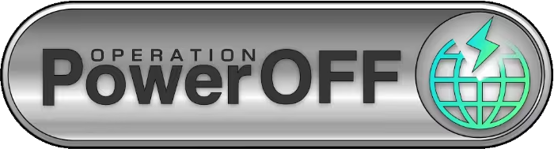
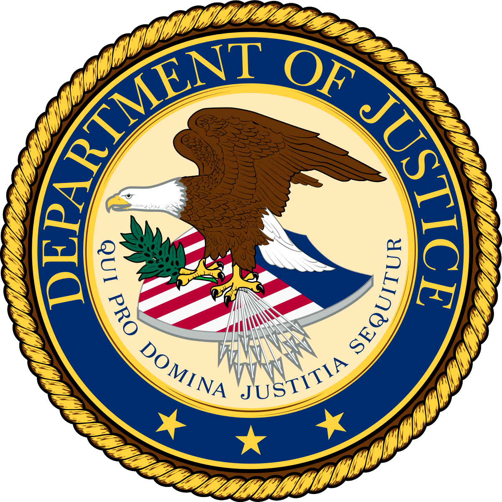
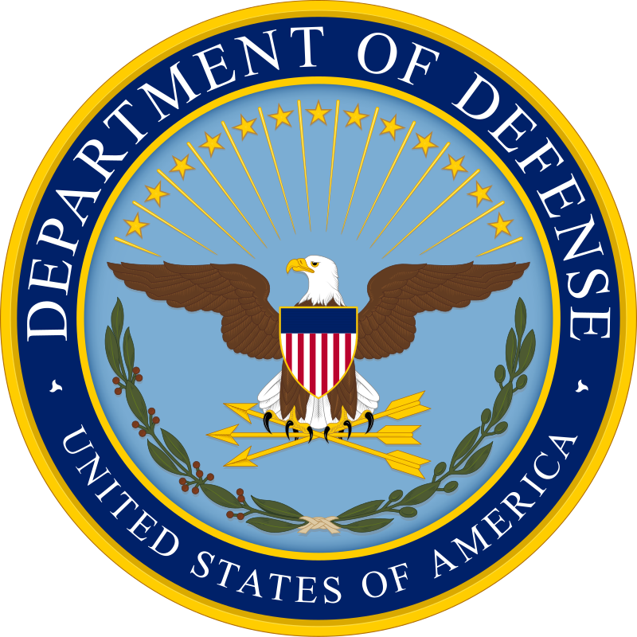
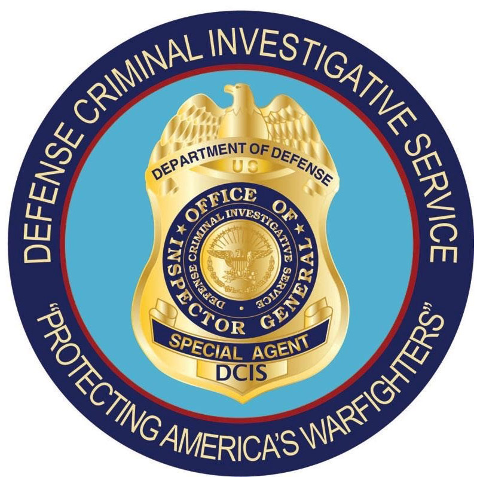
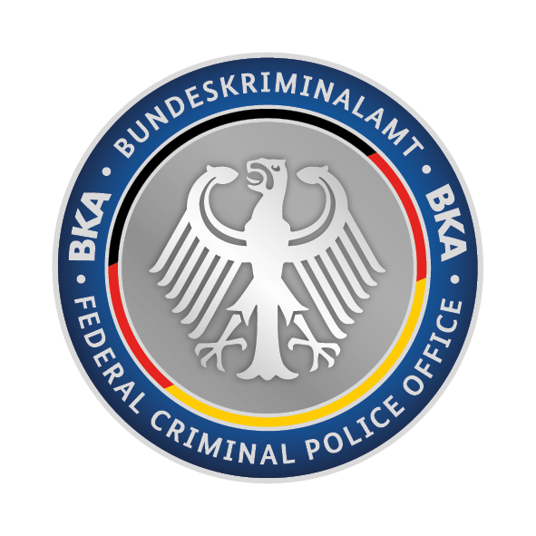
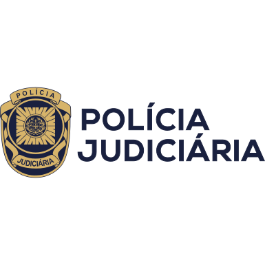
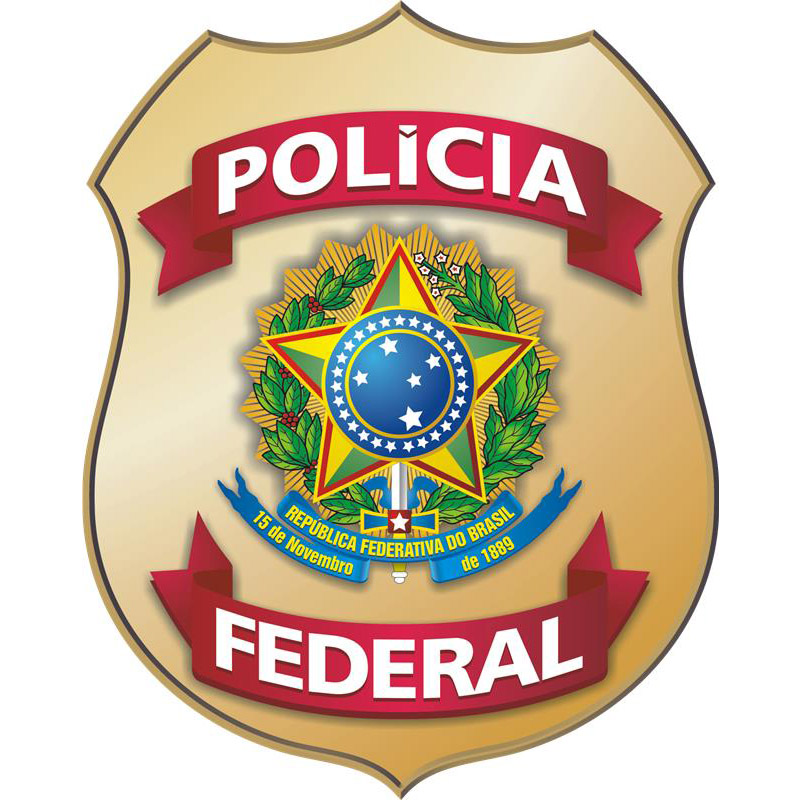
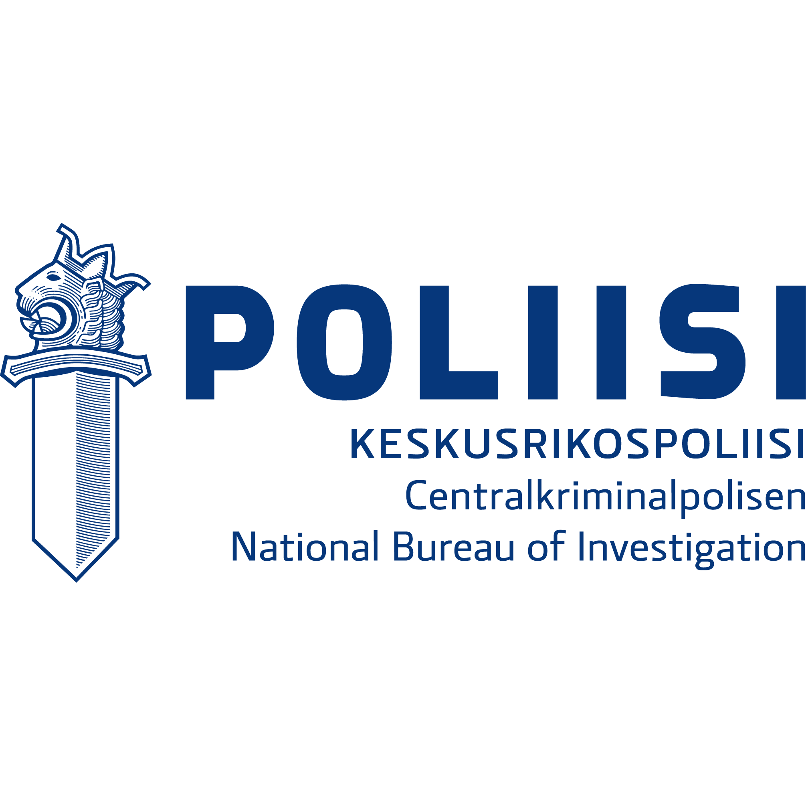
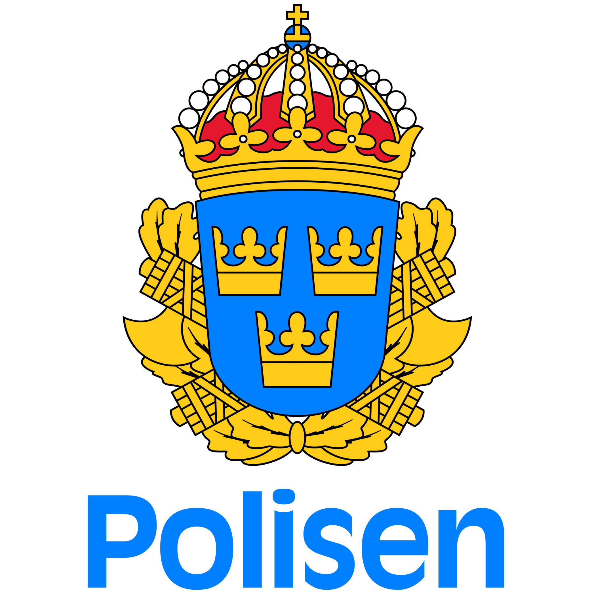
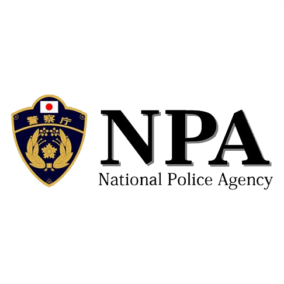

This website has been seized
Operation PowerOFF is an ongoing joint operation by international Law Enforcement to close booter/stresser services offering DDoS for hire attack services.

Operation PowerOFF is an ongoing joint operation by international Law Enforcement to close booter/stresser services offering DDoS for hire attack services.











